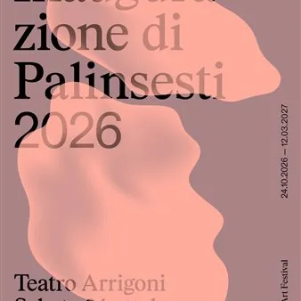

da sab 24 ott a ven 12 mar
Palinsesti. San Vito Art Festival!
Palinsesti. San Vito Art Festival! Con la sua ventunesima edizione, la storica rassegna conferma la sua trasformazione in un vero e proprio festival. Con la stagione 2026/2027, si avvia un nuovo progetto triennale sviluppato attorno al concetto di Costellazione: un insieme…
 Indicazioni
Indicazioni
- Costi e prenotazioni
- Costo non indicato · Prenotazione non indicata
- Programma
- Programma da verificare. Apri la fonte ufficiale per orari e possibili aggiornamenti.
- In caso di maltempo
- Nessuna indicazione specifica pubblicata.
- Note
- Acquisito automaticamente dalla fonte.
L’EVENTO
Descrizione completa
Palinsesti. San Vito Art Festival!
Con la sua ventunesima edizione, la storica rassegna conferma la sua trasformazione in un vero e proprio festival. Con la stagione 2026/2027, si avvia un n uovo progetto triennale sviluppato attorno al concetto di Costellazione: un insieme organico di idee, pratiche e nodi relazionali per esplorare le trasformazioni del mondo contemporaneo.
24 ottobre 2026 – 12 marzo 2027 a San Vito al Tagliamento
Salva la data per il primo grande appuntamento:
INAUGURAZIONE UFFICIALE | Sabato 24 ottobre, ore 16:00 | Teatro Arrigoni, San Vito al Tagliamento Mostre, performance serali, talk e percorsi guidati: un programma lungo 5 mesi per indagare i linguaggi dell’arte contemporanea e le sue nuove generazioni.
A cura generale di Magalì Cappellaro Il tema: Costellazioni corporee
Il nuovo ciclo triennale prende avvio dal concetto di “Costellazione”, inteso come un sistema di nodi, relazioni, idee e pratiche interconnesse attraverso cui l’arte può interpretare la complessità del presente. Per la XXI edizione il tema scelto è il corpo, sviluppato attraverso il macro-titolo “Costellazioni corporee”. Il corpo viene indagato come luogo di identità, vulnerabilità e memoria, ma anche di trasformazione, ibridazione tecnologica e rivendicazione. Una dimensione attraverso la quale interrogarsi sul modo in cui oggi abitiamo, percepiamo e trasformiamo il mondo. Le mostre
Il programma espositivo prende avvio il 24 ottobre 2026 con due mostre che affrontano il tema della corporeità attraverso prospettive e linguaggi differenti.
Al Castello di San Vito al Tagliamento , la mostra L’eco del gesto, curata da Elisa Saro, presenta il lavoro del duo Boscolo / Rossetto, che trasformerà gli spazi del piano terra del castello in un paesaggio percettivo fatto di luce, suono e oscurità. La ricerca dei due artisti si concentra sulle relazioni tra natura, luce, percezione, suono e spazio, interrogando il ruolo dell’arte nella contemporaneità e la possibilità che l’esperienza estetica possa generare nuove forme di consapevolezza. Le installazioni sonoro-luminose saranno concepite come materia viva e vibrante, capace di coinvolgere direttamente lo spettatore. Il pubblico sarà chiamato non soltanto a osservare, ma a entrare nello spazio e a percepirlo attraverso i propri sensi. La mostra diventa così un’esperienza immersiva nella quale il corpo si confronta con un ambiente in continua trasformazione e con il rapporto originario tra essere umano e natura.
All’Essiccatoio Bozzoli , Paesaggi del corpo, curata da Antonio Garlatti e Didier Zompicchiatti, propone invece un approfondimento dedicato alla ricerca artistica di Gaetano K. Bodanza, artista presente nella collezione Punto Fermo. L’esposizione ripercorre il percorso creativo di Bodanza, dagli esordi alle esperienze più recenti, mettendo in evidenza la centralità assunta dal corpo nella sua ricerca. Attraverso il confronto con i grandi maestri del passato, con la cultura Pop e con i diversi linguaggi dell’arte contemporanea, l’artista ha sviluppato una riflessione sul corpo come luogo di identità, trasformazione e immaginario. La sensibilità Pop e la sottile vena ironica che caratterizzano il suo lavoro diventano strumenti per osservare le fragilità dell’animo umano e le contraddizioni della società. L’imperfezione si trasforma così in una risorsa espressiva, attraverso un linguaggio che intreccia provocazione, leggerezza e riflessione e che affronta anche le trasformazioni di una società sempre più condizionata dai modelli e dai sistemi del consumo.
Le due esposizioni saranno visitabili fino al 16 gennaio 2027.
Dal 16 gennaio 2027, l’ Antico Ospedale di Santa Maria dei Battuti ospiterà BodyNoBody, mostra di ricognizione dedicata a sei giovani artisti attivi nel Triveneto: Nicola Bindoni, Sara Cecconi, Collettivo BOW, Giulia Gaffo, Mattia Montanari e Sebastiano Pallavisini, con la curatela di Francesca Battistutta e Magalì Cappellaro.
A vent’anni dalla nascita della rassegna, Palinsesti rinnova così il proprio impegno nel raccontare gli sviluppi più recenti della ricerca artistica contemporanea e nel valorizzare le nuove generazioni. Il corpo costituisce il filo conduttore del percorso, esplorato attraverso poetiche e linguaggi differenti. I dipinti su tela e tavola di Nicola Bindoni, Mattia Montanari e Sebastiano Pallavisini dialogano con le installazioni site-specific di Sara Cecconi, Collettivo BOW e Giulia Gaffo, dando vita a un percorso multimediale nel quale la dimensione corporea diventa uno strumento per interrogare il presente. Il corpo emerge come archivio di traumi, dolore, disagio, identità e memoria, ma anche come organismo vivo, duttile e polimorfo, capace di entrare in relazione con l’alterità, con i fenomeni naturali e con lo spazio, fino a superarne i confini. Nascono le Palinsesti Art Nights
Una delle novità della XXI edizione è rappresentata dalle Palinsesti Art Nights, un nuovo programma dedicato alle arti performative che amplia la dimensione espositiva del festival attraverso appuntamenti serali pensati come occasioni di incontro e confronto. In sintonia con il tema dell’edizione, la performance diventa uno spazio nel quale presenza corporea ed esperienza diretta della pratica artistica assumono un ruolo centrale. Tra i progetti in programma figura AGANIS, performance sonora immersiva per due voci e live electronics di Chiara Cecconello, nata da una ricerca sviluppata intorno ad alcune grotte delle Prealpi Venete che la tradizione popolare indica come dimora delle anguane, figure femminili delle acque della mitologia alpina e prealpina.
Canti e versi, registrazioni ambientali, riverberi minerali e sonorità umide si intrecciano in una partitura sonora stratificata che coinvolge lo spazio e chi lo abita. Il rapporto tra bocca e grotta diventa metafora di un confine mobile tra corpo e roccia, tra dimensione umana e ciò che la oltrepassa, invitando il pubblico a spingere l’ascolto oltre la soglia dell’udibile.
Completa il programma Vespro, progetto di ricerca interdisciplinare di Camilla Isola, ispirato alla figura del genius loci, lo spirito che abita un luogo. Attraverso registrazioni sul campo, esplorazioni vocali, pratiche in movimento e video, il progetto indaga la relazione tra presenza e paesaggio durante le ore del vespro, momento di passaggio tra luce e oscurità, visibile e invisibile.
Realizzato in collaborazione con Paolo Danelone per visual e scenografia, Giuditta Amendola per costumi e scenografia e Lucy Railton per il tutoraggio sonoro, Vespro gode del supporto del Centro di residenza delle Arti Performative del Friuli Venezia Giulia e di MOST Popolo. Il progetto nasce dall’interesse per luoghi sospesi tra abbandono e trasformazione, nei quali le tracce della presenza umana convivono con processi di scomparsa e rigenerazione. Cimiteri, giardini e spazi riconquistati dalla vegetazione diventano paesaggi in cui presenza e assenza, memoria e trasformazione si intrecciano. Attraverso la voce, l’ascolto, la ripetizione e strutture cicliche legate al rituale e alla memoria collettiva, Vespro invita a rallentare e a costruire uno spazio di ascolto condiviso. Le mostre saranno visitabili dal 24 ottobre 2026 al 12 gennaio 2027, il sabato e la domenica dalle 11.00 alle 13.00 e dalle 14.30 alle 18.30.
Il programma completo, con tutti gli appuntamenti, gli aggiornamenti e le informazioni sulle attività del festival, è disponibile sul sito www.palinsesti.org
IL PROGRAMMA
Programma e orari
Appuntamenti raccolti dalle fonti elencate. Dove manca un orario, non è ancora disponibile in questa scheda.
Programma pubblicato
- Dal 2026-10-24 al 2027-03-12
INFORMAZIONI UTILI
Prima di partire
- Controllare la fonte prima di partire.
ORGANIZZAZIONE